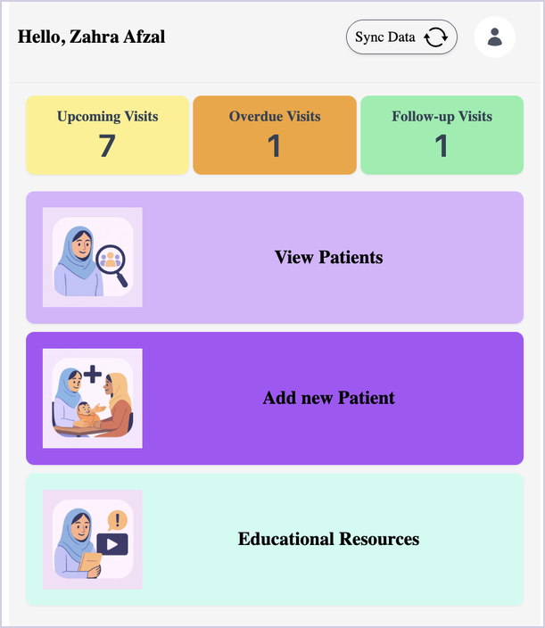
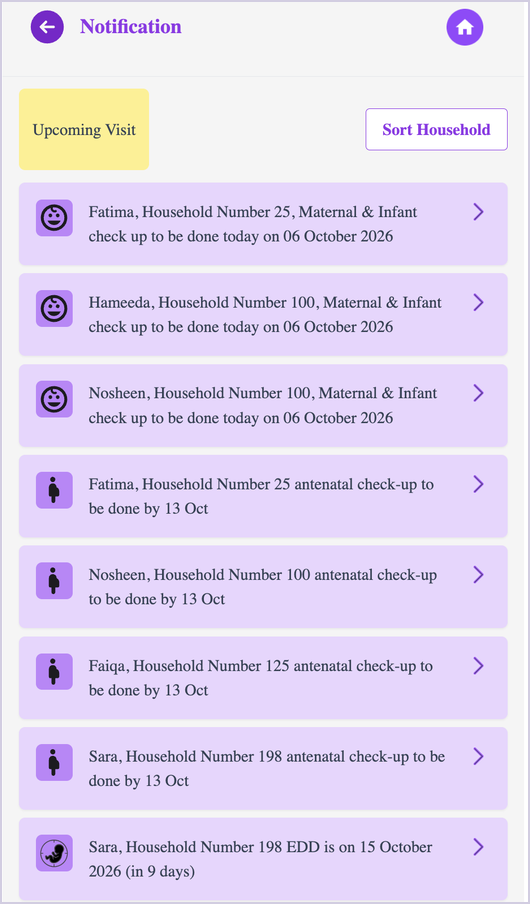
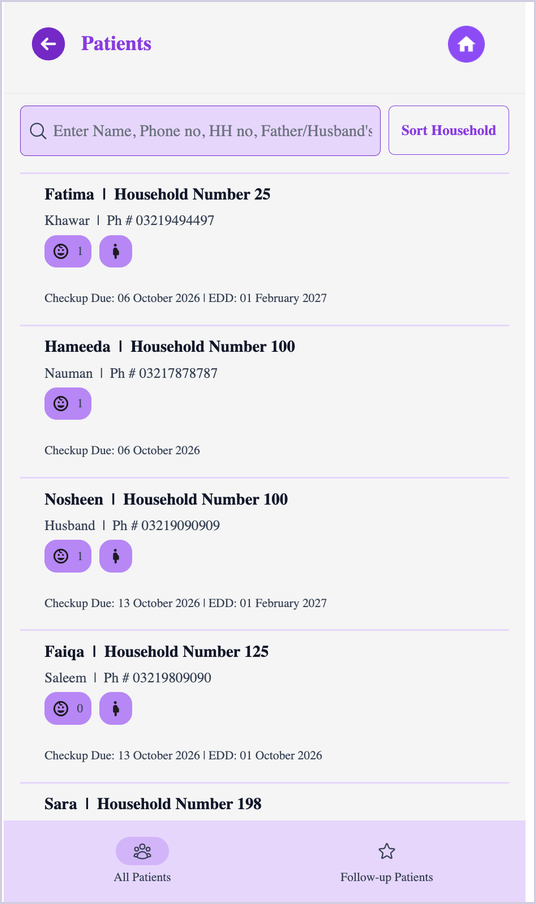
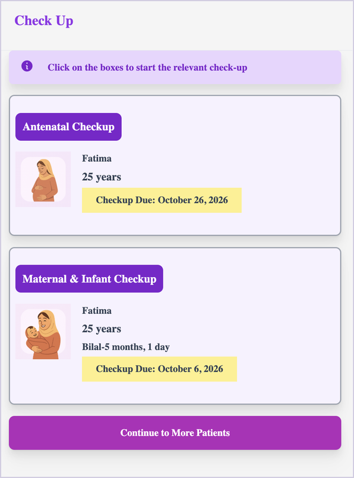
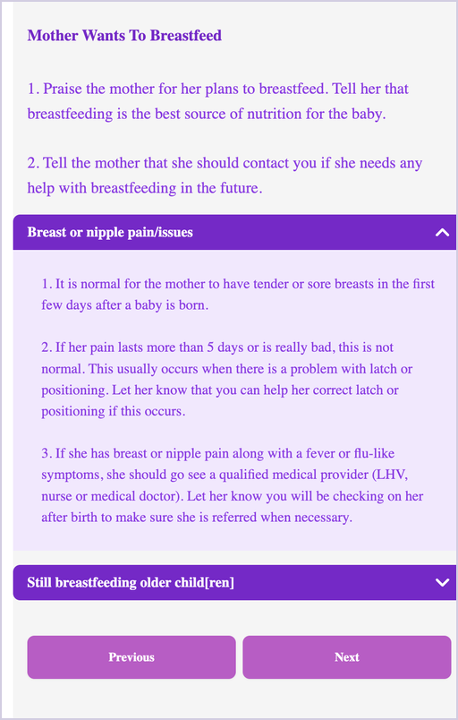
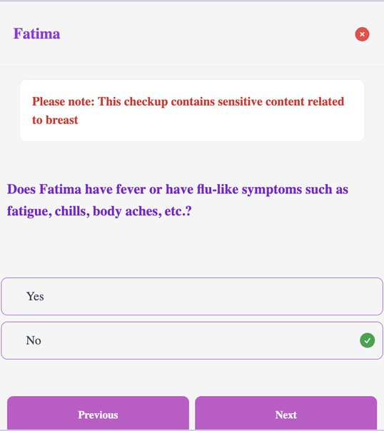
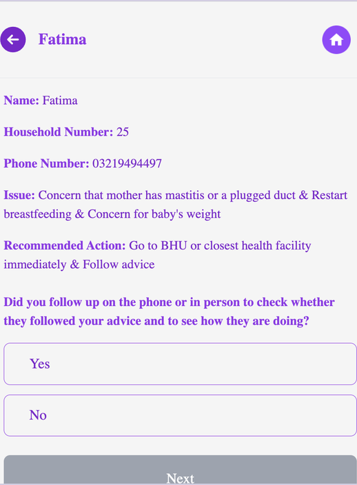
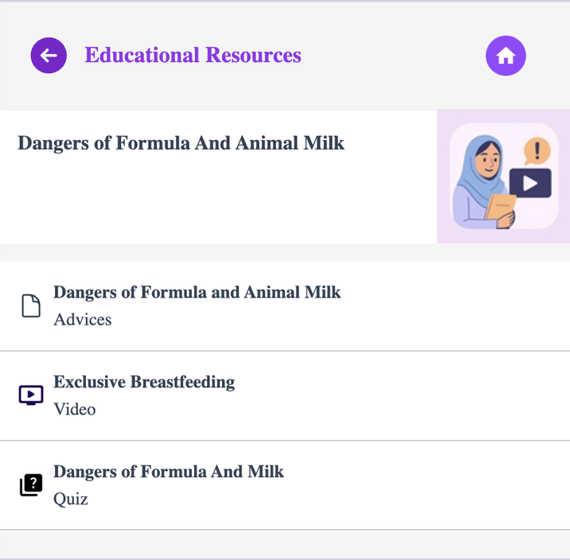

<meta charset="utf-8">
<meta name="viewport" content="width=device-width, initial-scale=1, viewport-fit=cover">
<title>Infant Feeding App</title>
<meta name="claude:viewport-fit-sides" content="cover">
<meta name="robots" content="noindex, nofollow">
<link rel="preconnect" href="https://fonts.googleapis.com">
<link rel="preconnect" href="https://fonts.gstatic.com" crossorigin>
<link rel="stylesheet" href="https://fonts.googleapis.com/css2?family=DM+Serif+Display:ital@0;1&family=Hanken+Grotesk:wght@400;500;600;700&family=JetBrains+Mono:wght@400;500&family=Noto+Nastaliq+Urdu:wght@500&display=swap">
<style>
/* Layout: lilac-tinted page, plum ink, the app's own violet as the single accent.
   Hero pairs the promise with one real check-up path from the demo; then features,
   a phone-frame screen gallery, and the access steps. */
:root{
  --bg:#f7f5fb; --surface:#ffffff; --ink:#1f1530; --muted:#5d536e; --line:#e3ddee;
  --violet:#8640f8; --violet-ink:#5b1fd0; --violet-soft:#efe6ff; --ok:#1f7a55; --warn:#b4531a;
  --display:"DM Serif Display",Georgia,"Times New Roman",serif;
  --body:"Hanken Grotesk",system-ui,-apple-system,"Segoe UI",sans-serif;
  --mono:"JetBrains Mono",ui-monospace,Menlo,Consolas,monospace;
  --urdu:"Noto Nastaliq Urdu","Jameel Noori Nastaleeq",serif;
}
@media (prefers-color-scheme: dark){:root:not([data-theme="light"]){
  --bg:#130e1c; --surface:#1d1629; --ink:#efeaf8; --muted:#aea3c2; --line:#2f2640;
  --violet:#a578ff; --violet-ink:#c4a6ff; --violet-soft:#2a1f45; --ok:#5fcf9d; --warn:#f0a06b; color-scheme:dark}}
:root[data-theme="dark"]{
  --bg:#130e1c; --surface:#1d1629; --ink:#efeaf8; --muted:#aea3c2; --line:#2f2640;
  --violet:#a578ff; --violet-ink:#c4a6ff; --violet-soft:#2a1f45; --ok:#5fcf9d; --warn:#f0a06b; color-scheme:dark}

*{box-sizing:border-box}
body{background:var(--bg);color:var(--ink);font-family:var(--body);font-size:17px;line-height:1.6}
.wrap{max-width:1120px;margin:0 auto;padding-left:max(16px,env(safe-area-inset-left,0px));padding-right:max(16px,env(safe-area-inset-right,0px))}
h1,h2,h3{font-family:var(--display);font-weight:400;line-height:1.1;text-wrap:balance;margin:0}
h1{font-size:clamp(2.4rem,5.5vw,4rem)}
h2{font-size:clamp(1.9rem,3.6vw,2.6rem)}
h3{font-family:var(--body);font-weight:700;font-size:1.05rem;line-height:1.3}
p{margin:0}
a{color:var(--violet-ink)}
.label{font-family:var(--mono);font-size:.74rem;letter-spacing:.08em;text-transform:uppercase;color:var(--muted)}
.btn{display:inline-flex;align-items:center;gap:.5rem;padding:.85rem 1.4rem;border-radius:999px;font-weight:600;text-decoration:none;border:1.5px solid transparent;font-size:1rem;cursor:pointer}
.btn-primary{background:var(--violet);color:#fff}
.btn-primary:hover{filter:brightness(1.08)}
.btn-ghost{border-color:var(--line);color:var(--ink);background:transparent}
.btn-ghost:hover{border-color:var(--violet)}
.btn:focus-visible,button:focus-visible,a:focus-visible{outline:3px solid var(--violet);outline-offset:3px}

/* top bar */
.top{border-bottom:1px solid var(--line)}
.top .wrap{display:flex;justify-content:space-between;align-items:center;padding-block:14px;gap:16px}
.mark{display:flex;align-items:center;gap:.6rem;font-weight:700;letter-spacing:-.01em}
.mark i{width:28px;height:28px;border-radius:50%;background:var(--violet);display:grid;place-items:center}
.mark i::after{content:"";width:12px;height:12px;border-radius:50%;background:var(--bg)}
.top nav{display:flex;gap:20px;font-size:.95rem}
.top nav a{color:var(--muted);text-decoration:none}
.top nav a:hover{color:var(--ink)}
@media (max-width:640px){.top nav{display:none}}

/* hero */
.hero .wrap{display:grid;grid-template-columns:1.1fr .9fr;gap:56px;padding-block:72px 64px;align-items:center}
.hero-copy{display:flex;flex-direction:column;gap:22px;min-width:0}
.hero-copy .lede{font-size:1.15rem;color:var(--muted);max-width:34em}
.hero-copy h1 em{font-style:italic;color:var(--violet-ink)}
.ctas{display:flex;flex-wrap:wrap;gap:12px}
.langs{display:flex;align-items:center;gap:14px;color:var(--muted);font-size:.95rem}
.langs .ur{font-family:var(--urdu);font-size:1.05rem;line-height:1}
@media (max-width:880px){.hero .wrap{grid-template-columns:1fr;gap:40px;padding-block:48px}}

/* answer path */
.path{background:var(--surface);border:1px solid var(--line);border-radius:20px;padding:24px;display:flex;flex-direction:column;gap:6px;min-width:0}
.path .label{margin-bottom:10px}
.step{display:grid;grid-template-columns:22px 1fr;gap:12px}
.step .rail{display:flex;flex-direction:column;align-items:center}
.step .dot{width:12px;height:12px;border-radius:50%;border:2px solid var(--violet);background:var(--surface);margin-top:6px;flex:none}
.step .line{width:2px;flex:1;background:var(--line);margin-block:2px}
.step:last-child .line{display:none}
.step .q{font-size:.95rem;color:var(--muted)}
.step .a{font-weight:600;padding-bottom:12px}
.chip{display:inline-block;font-family:var(--mono);font-size:.72rem;padding:.15rem .5rem;border-radius:6px;margin-left:.35rem;vertical-align:1px}
.chip.ok{background:color-mix(in srgb,var(--ok) 14%,transparent);color:var(--ok)}
.chip.warn{background:color-mix(in srgb,var(--warn) 14%,transparent);color:var(--warn)}
.chip.v{background:var(--violet-soft);color:var(--violet-ink)}
.step.end .dot{background:var(--violet)}

/* sections */
section{padding-block:72px}
section + section{border-top:1px solid var(--line)}
.head{display:flex;flex-direction:column;gap:12px;max-width:44em;margin-bottom:40px}
.head p{color:var(--muted);font-size:1.08rem}

/* journey */
.journey{display:grid;grid-template-columns:repeat(3,1fr);gap:0;border:1px solid var(--line);border-radius:18px;overflow:hidden;background:var(--surface)}
.journey > div{padding:26px;display:flex;flex-direction:column;gap:10px;min-width:0}
.journey > div + div{border-left:1px solid var(--line)}
.journey .when{font-family:var(--mono);font-size:.8rem;color:var(--violet-ink)}
.journey p{color:var(--muted);font-size:.98rem}
@media (max-width:820px){.journey{grid-template-columns:1fr}.journey > div + div{border-left:0;border-top:1px solid var(--line)}}

/* features */
.features{display:grid;grid-template-columns:repeat(2,1fr);gap:40px 56px}
.feat{display:flex;flex-direction:column;gap:8px;min-width:0;padding-top:18px;border-top:2px solid var(--ink)}
.feat p{color:var(--muted)}
.partners{margin-top:48px;color:var(--muted);display:flex;flex-wrap:wrap;gap:6px 14px;align-items:baseline}
.stat{font-family:var(--display);font-size:2.6rem;line-height:1;color:var(--violet-ink);font-variant-numeric:tabular-nums}
@media (max-width:720px){.features{grid-template-columns:1fr}}

/* gallery */
.gallery{display:grid;grid-template-columns:repeat(4,1fr);gap:28px}
@media (max-width:960px){.gallery{grid-template-columns:repeat(2,1fr)}}
figure{margin:0;display:flex;flex-direction:column;gap:12px;min-width:0}
.phone{aspect-ratio:2/3;max-width:100%;border-radius:22px;border:6px solid var(--ink);background:var(--violet-soft);overflow:hidden;position:relative}
.phone img{position:relative;z-index:1;width:100%;height:100%;object-fit:contain;object-position:top;background:#fff;display:block}
.phone .ph{position:absolute;inset:0;display:flex;flex-direction:column;justify-content:center;align-items:center;gap:8px;text-align:center;padding:16px;color:var(--violet-ink)}
.phone .ph b{font-family:var(--display);font-weight:400;font-size:1.2rem;line-height:1.2}
.phone .ph span{font-family:var(--mono);font-size:.68rem;opacity:.8}
figcaption{font-size:.92rem;color:var(--muted)}
figcaption strong{color:var(--ink);display:block;font-size:.98rem}

/* access */
.access{display:grid;grid-template-columns:1fr 1fr;gap:56px;align-items:start}
@media (max-width:860px){.access{grid-template-columns:1fr;gap:40px}}
.steps{list-style:none;margin:0;padding:0;display:flex;flex-direction:column;gap:22px;counter-reset:s}
.steps li{display:grid;grid-template-columns:40px 1fr;gap:14px;counter-increment:s}
.steps li::before{content:counter(s);width:36px;height:36px;border-radius:50%;background:var(--violet-soft);color:var(--violet-ink);font-weight:700;display:grid;place-items:center}
.steps h3{margin-bottom:4px}
.steps p{color:var(--muted);font-size:.98rem}
.terms{background:var(--surface);border:1px solid var(--line);border-radius:18px;padding:28px;display:flex;flex-direction:column;gap:18px}
.terms ul{margin:0;padding-left:1.1rem;display:flex;flex-direction:column;gap:8px;color:var(--muted)}
.cite{font-family:var(--mono);font-size:.82rem;line-height:1.55;background:var(--bg);border:1px solid var(--line);border-radius:10px;padding:14px;overflow-wrap:anywhere}
.cite-row{display:flex;justify-content:space-between;align-items:center;gap:10px}
.copy{font:inherit;font-size:.85rem;font-weight:600;background:none;border:1px solid var(--line);color:var(--ink);border-radius:8px;padding:.35rem .7rem;cursor:pointer}
.copy:hover{border-color:var(--violet)}

.form-wrap{margin-top:56px}
.form-card{background:var(--surface);border:1px solid var(--line);border-radius:18px;padding:28px;display:flex;flex-direction:column;gap:18px;max-width:760px;margin:0 auto}
.form-head{display:flex;flex-direction:column;gap:6px}
.form-head h3{font-family:var(--display);font-weight:400;font-size:1.6rem}
.form-head p,.form-alt{color:var(--muted);font-size:.95rem}
.form-card iframe{width:100%;height:1900px;border:0;border-radius:10px;background:#fff;display:block}
@media (max-width:600px){.form-card{padding:16px}.form-card iframe{height:2300px}}
html{scroll-behavior:smooth}
@media (prefers-reduced-motion:reduce){html{scroll-behavior:auto}}
footer{border-top:1px solid var(--line);padding-block:36px;color:var(--muted);font-size:.92rem}
footer .wrap{display:flex;flex-wrap:wrap;justify-content:space-between;gap:16px}
@media (prefers-reduced-motion:no-preference){.btn{transition:filter .15s,border-color .15s}}
</style>

<header class="top">
  <div class="wrap">
    <div class="mark"><i aria-hidden="true"></i>Infant Feeding</div>
    <nav aria-label="Sections">
      <a href="#how">How it works</a>
      <a href="#why">Why it matters</a>
      <a href="#screens">Screens</a>
      <a href="#access">Get access</a>
    </nav>
  </div>
</header>

<main>
  <div class="hero">
    <div class="wrap">
      <div class="hero-copy">
        <span class="label">For Lady Health Workers · Pakistan</span>
        <h1>Breastfeeding counselling, <em>guided by every answer</em> the mother gives.</h1>
        <p class="lede">The Infant Feeding app walks Lady Health Workers through each home visit, from pregnancy to the baby's first birthday. Each answer decides the next question and the advice shown, so every mother gets guidance for her own situation.</p>
        <div class="ctas">
          <a class="btn btn-primary" href="#request-form">Request access</a>
          <a class="btn btn-ghost" href="#screens">See the screens</a>
        </div>
        <div class="langs"><span>Works offline</span><span aria-hidden="true">·</span><span>English</span><span aria-hidden="true">·</span><span class="ur" lang="ur">اردو</span></div>
      </div>

      <div class="path" aria-label="Example check-up path">
        <span class="label">One real visit · Maternal &amp; Infant check-up</span>
        <div class="step"><div class="rail"><span class="dot"></span><span class="line"></span></div><div><p class="q">Any danger signs in the baby?</p><p class="a">No <span class="chip ok">clear</span></p></div></div>
        <div class="step"><div class="rail"><span class="dot"></span><span class="line"></span></div><div><p class="q">Is the mother breastfeeding?</p><p class="a">No. Breast pain, works outside the home</p></div></div>
        <div class="step"><div class="rail"><span class="dot"></span><span class="line"></span></div><div><p class="q">Breast &amp; Nipple Pain module: fever?</p><p class="a">No <span class="chip ok">no urgent referral</span></p></div></div>
        <div class="step"><div class="rail"><span class="dot"></span><span class="line"></span></div><div><p class="q">Warm, red or firm area on the breast?</p><p class="a">Yes <span class="chip warn">likely mastitis</span></p></div></div>
        <div class="step end"><div class="rail"><span class="dot"></span><span class="line"></span></div><div><p class="q">App shows</p><p class="a">Feed or express often; BHU if no better in 24 hours <span class="chip v">follow-up created</span></p></div></div>
      </div>
    </div>
  </div>

  <section id="how">
    <div class="wrap">
      <div class="head">
        <span class="label">How it works</span>
        <h2>Check-ups that follow the mother, from pregnancy to the first birthday</h2>
        <p>The app sets each mother's schedule when she is registered, then tells the LHW who is due, who is overdue and who needs a follow-up call.</p>
      </div>
      <div class="journey">
        <div>
          <span class="when">During pregnancy</span>
          <h3>Antenatal check-ups</h3>
          <p>Scheduled from the expected delivery date. Each visit checks her plans and concerns, reviews the last topic, and ends with counselling on early initiation, colostrum and the risks of prelacteal feeds.</p>
        </div>
        <div>
          <span class="when">Birth to 12 months</span>
          <h3>Maternal &amp; Infant check-ups</h3>
          <p>Screens the baby for danger signs, asks what he was fed this week, checks urine and stool, and opens modules such as Breast &amp; Nipple Pain when the mother raises a problem.</p>
        </div>
        <div>
          <span class="when">After every visit</span>
          <h3>Follow-ups and next dates</h3>
          <p>The next check-up is scheduled automatically. Issues such as mastitis or a weight concern become a follow-up with the recommended action and the mother's phone number.</p>
        </div>
      </div>
    </div>
  </section>

  <section id="why">
    <div class="wrap">
      <div class="head">
        <span class="label">Why it matters</span>
        <h2>Better breastfeeding, from the first hour to age two</h2>
        <p>The WHO estimates that 820,000 infant deaths a year could be prevented with recommended breastfeeding. In Punjab, most mothers fall short of all three recommendations. Lady Health Workers already visit every mother at home; the app helps them give the right advice at the right time.</p>
      </div>
      <div class="features">
        <div class="feat"><span class="stat">20%</span><h3>Start within the first hour</h3><p>Only 20% of babies in Punjab are breastfed within an hour of birth. The app makes sure counselling on colostrum, skin-to-skin contact and early feeding happens during pregnancy, before the birth.</p></div>
        <div class="feat"><span class="stat">48%</span><h3>Breast milk only for six months</h3><p>Only 48% of babies under six months are exclusively breastfed. The app helps LHWs tackle low milk supply, myths about breast milk, and feeding when mothers work or leave the home.</p></div>
        <div class="feat"><span class="stat">35%</span><h3>Continue to two years</h3><p>Only 35% of children are still breastfed at two. The app guides LHWs through breast and nipple problems, latch and positioning, and reassures mothers who become pregnant again.</p></div>
        <div class="feat"><span class="stat">331</span><h3>Built with government, tested in a trial</h3><p>Developed with the Punjab Health Department and UNICEF Pakistan, and being evaluated in a randomized trial with 331 LHWs in Gujranwala, Kasur and Sheikhupura.</p></div>
      </div>
      <p class="partners"><span class="label">Research team</span> CERP · NC State University · Duke University · University of Pittsburgh · Aga Khan University · World Bank Pakistan</p>
    </div>
  </section>

  <section id="screens">
    <div class="wrap">
      <div class="head">
        <span class="label">Screens</span>
        <h2>A visit, screen by screen</h2>
        <p>Taken from a demo visit with Fatima, who is pregnant and has a five-month-old son, Bilal.</p>
      </div>
      <div class="gallery">
        <figure><div class="phone"><div class="ph"><b>Home</b><span>screens/01-home.png</span></div></div><figcaption><strong>Home</strong>Upcoming, overdue and follow-up visits, patients and resources.</figcaption></figure>
        <figure><div class="phone"><div class="ph"><b>Upcoming Visits</b><span>screens/02-upcoming.png</span></div></div><figcaption><strong>Upcoming Visits</strong>Every check-up due soon, nearest date first.</figcaption></figure>
        <figure><div class="phone"><div class="ph"><b>Patients</b><span>screens/03-patient.png</span></div></div><figcaption><strong>Patients</strong>Search by name, phone or household. Icons show pregnancy and children under one.</figcaption></figure>
        <figure><div class="phone"><div class="ph"><b>Check-up cards</b><span>screens/04-checkups.png</span></div></div><figcaption><strong>Two check-ups, one visit</strong>Antenatal for Fatima and Maternal &amp; Infant for Bilal.</figcaption></figure>
        <figure><div class="phone"><div class="ph"><b>Advice</b><span>screens/05-advice.png</span></div></div><figcaption><strong>Advice for her concerns</strong>One dropdown for each concern she raised.</figcaption></figure>
        <figure><div class="phone"><div class="ph"><b>Breast &amp; Nipple Pain</b><span>screens/06-mastitis.png</span></div></div><figcaption><strong>Breast &amp; Nipple Pain</strong>Danger signs first: fever means an urgent BHU referral.</figcaption></figure>
        <figure><div class="phone"><div class="ph"><b>Follow-up</b><span>screens/07-followup.png</span></div></div><figcaption><strong>Automatic follow-up</strong>Issues, recommended action and the mother's number.</figcaption></figure>
        <figure><div class="phone"><div class="ph"><b>Resources &amp; quiz</b><span>screens/08-resources.png</span></div></div><figcaption><strong>Educational Resources</strong>Advice, video and a quiz for each subtopic.</figcaption></figure>
      </div>
    </div>
  </section>

  <section id="access">
    <div class="wrap access">
      <div>
        <div class="head" style="margin-bottom:28px">
          <span class="label">Get access</span>
          <h2>Free for research and non-commercial programmes</h2>
          <p>The app's code is kept in a private repository on GitHub, a website where code is stored and shared. Only people we add can open it. Request access and we will add you within a few days.</p>
        </div>
        <ol class="steps">
          <li><div><h3>Fill in the request form</h3><p>Tell us your name, organization, country, GitHub username and what you will use the app for, and agree to the two terms of use. No GitHub account yet? <a href="https://github.com/signup" target="_blank" rel="noopener">Create a free one</a> first; it takes two minutes.</p></div></li>
          <li><div><h3>We approve it within a few days</h3><p>A member of our team checks each request and emails you when access is ready.</p></div></li>
          <li><div><h3>Accept the GitHub invitation</h3><p>GitHub emails you an invitation to the private repository. Accept it within 7 days, then you can view and download the code.</p></div></li>
        </ol>
        <div class="ctas" style="margin-top:32px">
          <a class="btn btn-primary" href="#request-form">Request access</a>
        </div>
      </div>

      <div class="terms">
        <span class="label">Terms of use</span>
        <p style="color:var(--muted)">By requesting access you agree to two things:</p>
        <ul>
          <li><strong style="color:var(--ink)">Non-commercial use only.</strong> You will not sell the app or its code, or use it to make money.</li>
          <li><strong style="color:var(--ink)">Cite our work.</strong> Mention our work in any paper, report, presentation or product that uses the app.</li>
        </ul>
        <div class="cite-row"><span class="label">How to cite</span><button class="copy" id="copy-cite" type="button">Copy</button></div>
        <p class="cite" id="cite-text">Centre for Economic Research in Pakistan (CERP) and North Carolina State University. Infant Feeding (IF) App: guided breastfeeding counselling for Lady Health Workers. Version 1.0, 2026.</p>
        <p style="color:var(--muted);font-size:.92rem">Questions? Email <span style="color:var(--ink);font-weight:600;user-select:all">team-email@example.org</span></p>
      </div>
    </div>
    <div class="wrap form-wrap" id="request-form">
      <div class="form-card">
        <div class="form-head">
          <span class="label">Request form</span>
          <h3>Request access to the Infant Feeding app</h3>
          <p>All fields are required. It takes about 3 minutes.</p>
        </div>
        <iframe src="https://docs.google.com/forms/d/e/1FAIpQLSdBAzXp7ET02dIbIotyz6wWexcLznIlAnj5W1h2a6t-XUw8IQ/viewform?embedded=true" title="Infant Feeding App request access form" loading="lazy">Loading the form…</iframe>
        <p class="form-alt">Trouble with the form? <a href="https://docs.google.com/forms/d/e/1FAIpQLSdBAzXp7ET02dIbIotyz6wWexcLznIlAnj5W1h2a6t-XUw8IQ/viewform" target="_blank" rel="noopener">Open it in a new tab</a>.</p>
      </div>
    </div>
  </section>
</main>

<footer>
  <div class="wrap">
    <span>Infant Feeding App · CERP Labs and NC State University</span>
    <a href="https://infantfeeding.pk/home" target="_blank" rel="noopener">infantfeeding.pk</a>
  </div>
</footer>

<script>
document.getElementById('copy-cite').addEventListener('click', function(){
  var btn=this, t=document.getElementById('cite-text');
  function sel(){var r=document.createRange();r.selectNodeContents(t);var s=getSelection();s.removeAllRanges();s.addRange(r);btn.textContent='Selected';}
  try{
    navigator.clipboard.writeText(t.textContent).then(function(){btn.textContent='Copied';setTimeout(function(){btn.textContent='Copy'},1800)},sel);
  }catch(e){sel()}
});
</script>
